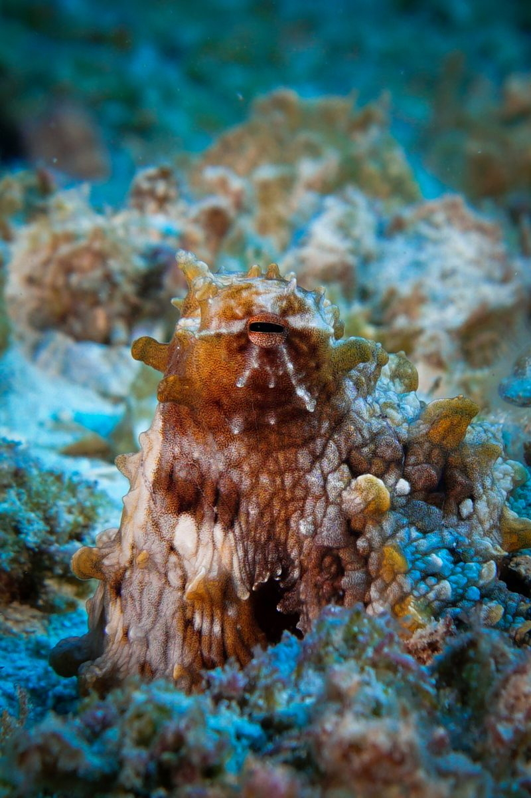

Thousands of tiny color sacs, muscles wired straight to the brain, and skin that can sense light by itself. The full trick, explained simply.
An octopus can flip its whole appearance — red to white, stripes to spots, bumpy to smooth — in about a tenth of a second. There is no magic and no dye involved. It is biology, engineered better than any screen we have ever built.
Here is how it actually works.
Tiny balloons full of color
Just under the skin of an octopus are thousands — sometimes millions — of special cells called chromatophores (say: cro-MAT-oh-fores). Each one is like a tiny balloon filled with colored pigment: black, brown, orange, red or yellow.
Now imagine stretching a balloon full of ink. The ink gathers into one dark spot, and the color looks brighter. That is exactly what a chromatophore does. A ring of tiny muscles around each sac pulls it open, and the color suddenly appears. Relax the muscles, and the sac shrinks back into invisibility.
Because every single chromatophore is wired directly to the octopus's brain, the animal can control each dot separately. That is how it paints sharp stripes or spots across its body instead of just turning one overall color.
Three layers, not one
An octopus does not rely on a single set of colors. It has three stacked layers of chromatophores, and each layer produces a different shade: yellow on top, red in the middle, brown underneath.
By stretching some sacs and relaxing others, the octopus mixes colors the way an artist mixes paint. It can make orange by overlapping red and yellow, or fade to near-white by shutting everything down.

The shiny extras: iridophores and leucophores
Chromatophores alone cannot make every color, so cephalopods — the group of animals with arms attached to their heads — carry two more kinds of cells.
Iridophores (say: ih-RID-oh-fores) contain stacks of reflective plates that bounce back light as glittering greens, blues, silvers and golds. Combine those with chromatophores and you get colors like purple that pigment alone could never make.
Leucophores (say: LOO-koh-fores) do the opposite: they scatter light to create white and a soft shine, controlling brightness instead of color.
Together, these three cell types make cuttlefish the best color artists in the animal kingdom.
Skin that senses light by itself
Here is the strangest part. A two-spot octopus in a California lab changed color when researchers shone light directly on its skin — even when its eyes saw nothing. The skin appeared to be sensing light on its own.
Follow-up work found the reason: the skin contains neurons carrying rhodopsin, the same light-catching protein usually made in eyes. Scientists call the whole effect LACE — light-activated chromatophore expansion.
So the octopus's skin is not just a display. Part of it is also an eye.
The texture trick, and one big mystery
Color is only half the disguise. An octopus can also change its skin texture, raising small bumps called papillae to mimic rocks, coral or seaweed. Color plus texture is what makes it nearly invisible against a reef.
And here is the mystery: by counting light-catching pigments in octopus eyes, scientists think octopuses may be color-blind. The animal might be putting on a brilliant color show it cannot actually see — copying what its eyes sense as differences in brightness, and hoping it looks like the reef behind it.
It seems to work very well.
Sources: Smithsonian Ocean — How Octopuses and Squids Change Color · Live Science — How do octopuses change color? · California Academy of Sciences — A Cephalopod Light Show